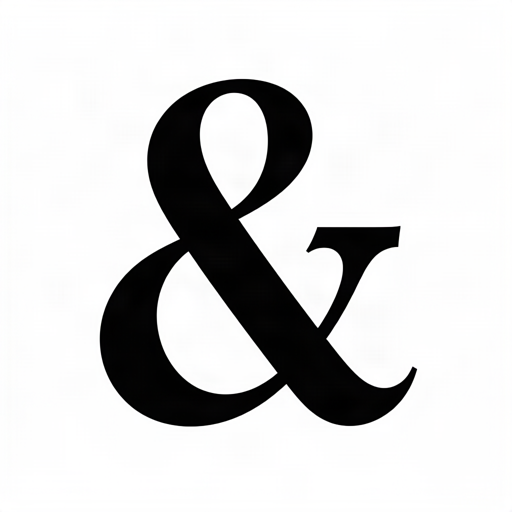
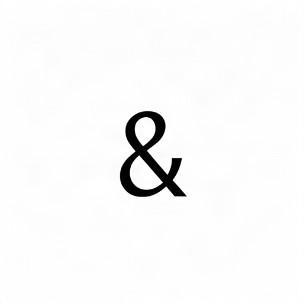
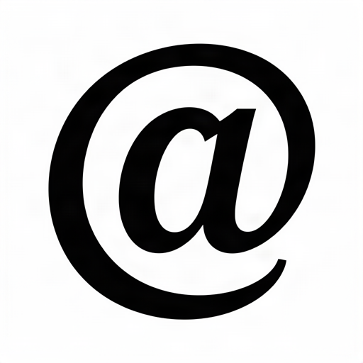
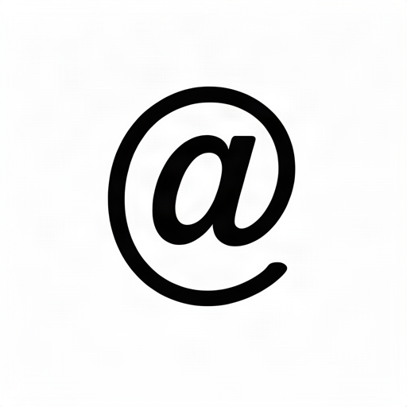
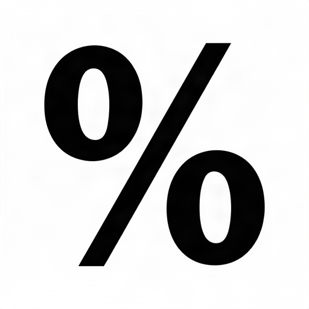
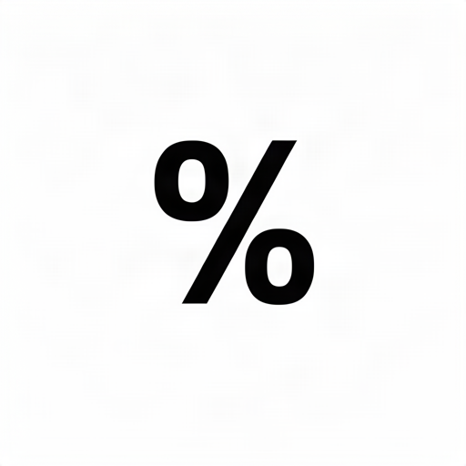
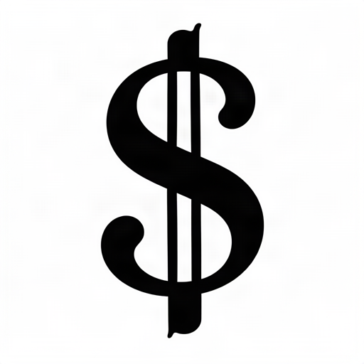
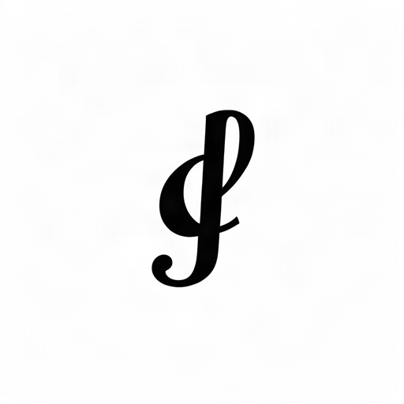

One glyph, three models.
A small fal comparison using the same four fonts and symbols from the earlier experiment. Each model received an automatically rendered alphabet specimen and the same single-character prompt. Click an image for the original generated file.
One attempt per model and case; no cherry-picking. Images are raw 512px outputs before tracing or sizing. White space varies by model, so compare shape and style rather than apparent size. The reference is the source font’s original character, withheld from the model.
| Font lettering | Qwen Image Edit 2511 | FLUX.2 Klein 4B Base | GPT Image 1.5 · low | Original glyph |
|---|---|---|---|---|
| Ostrich SansThin, condensed · & ART DESIGN ABCDEFG 012345 |  |  |  | & |
| Kool BeansBold, decorative · @ HELLO WORLD ABCDEFG 012345 |  |  |  | @ This font’s original @ spells out “at”. |
| MonofontoBold, monospaced · % SAVE TODAY ABCDEFG 012345 |  |  |  | % |
| Perfect SignatureExpressive script · $ SALE NOW ABCDEFG 012345 |  |  |  | $ |